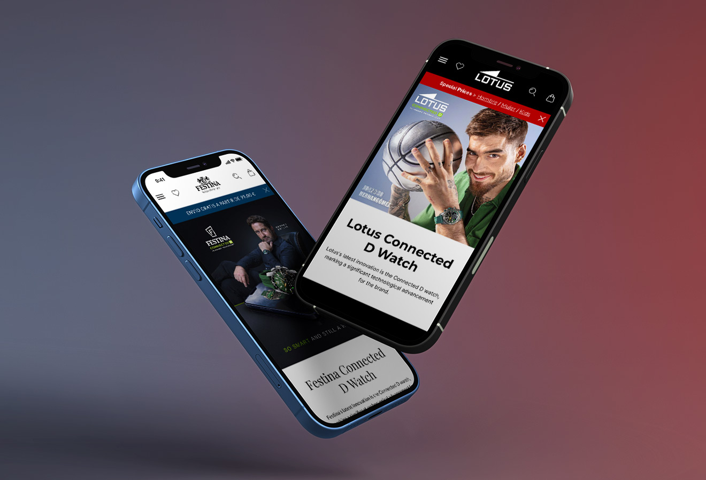
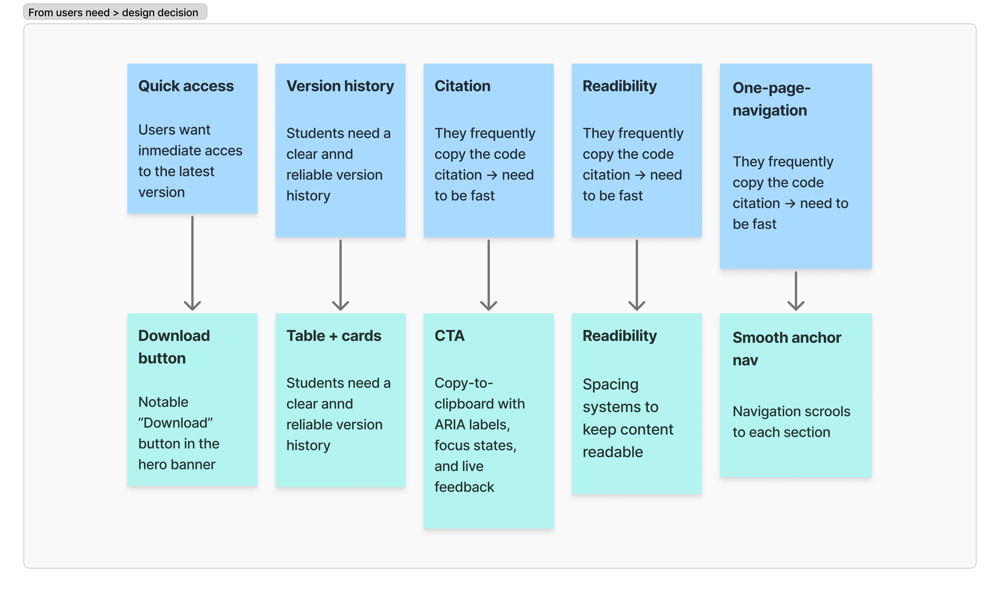
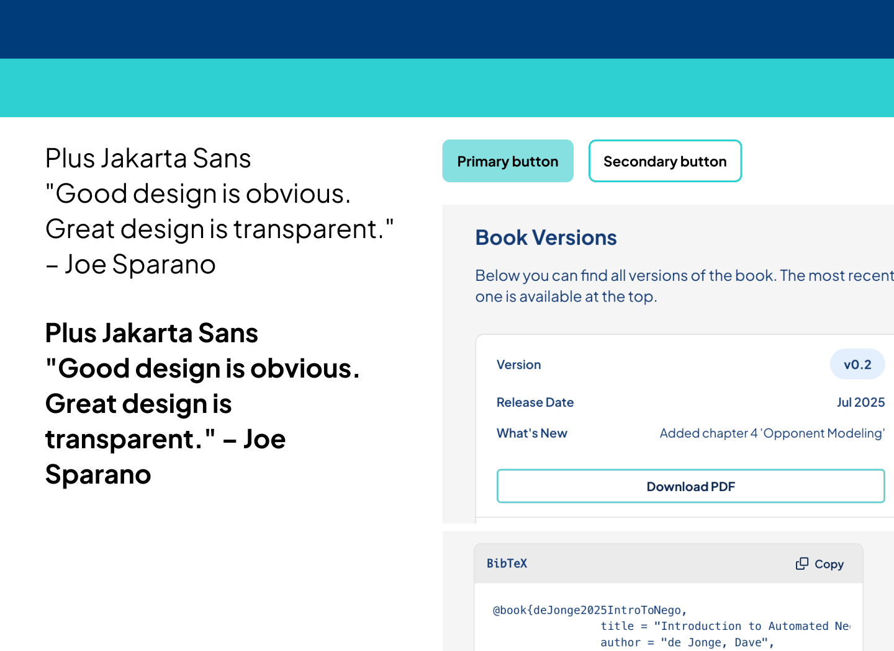
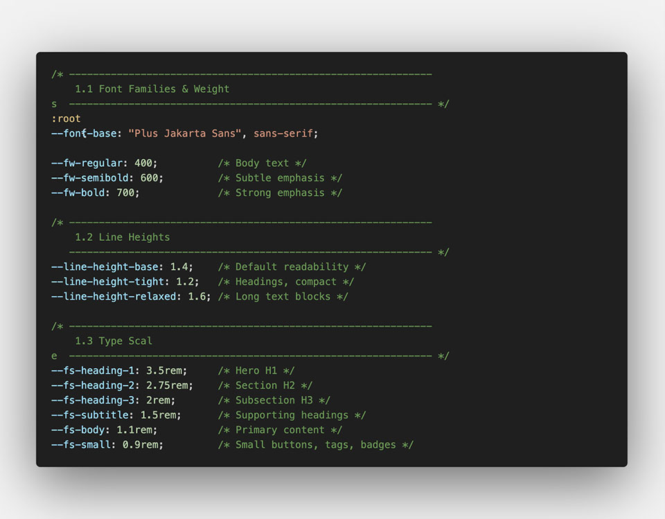
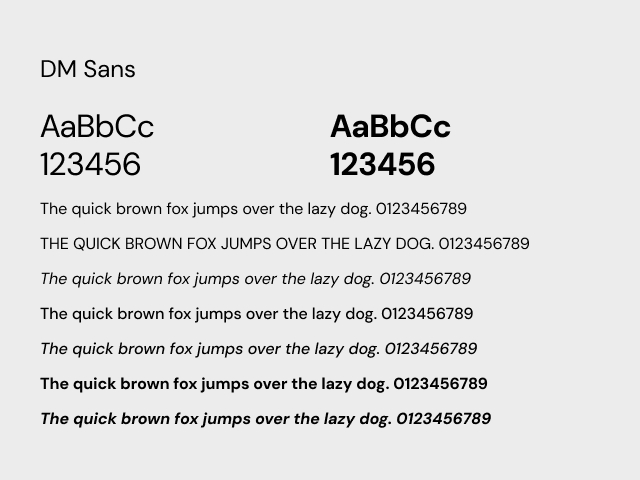
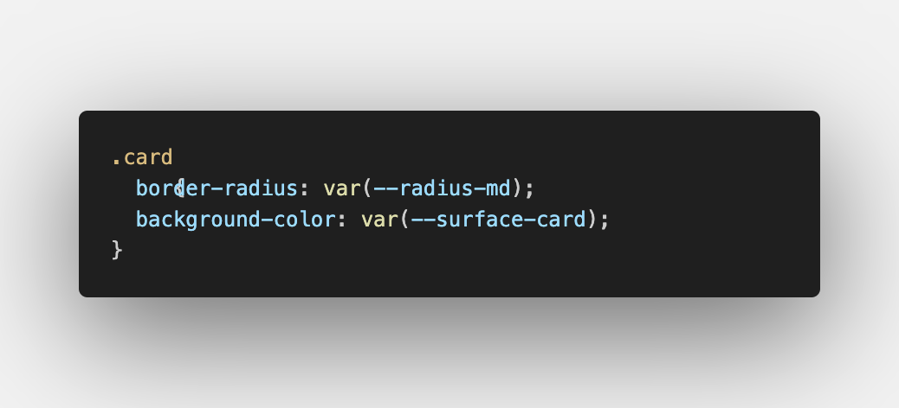
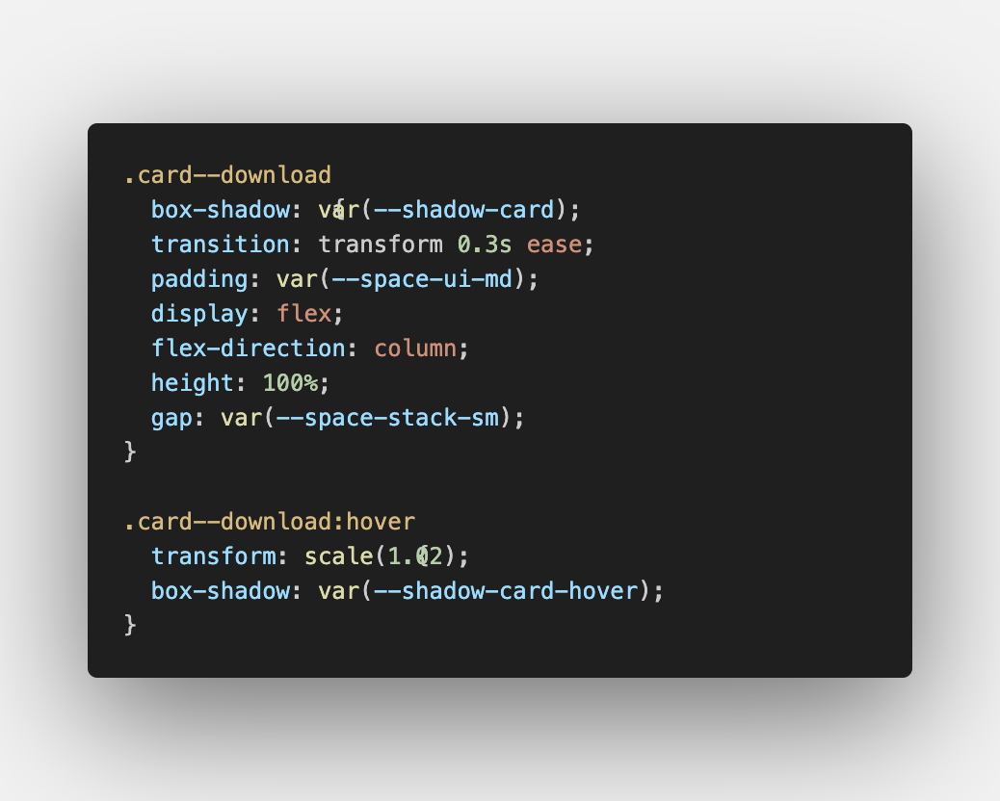
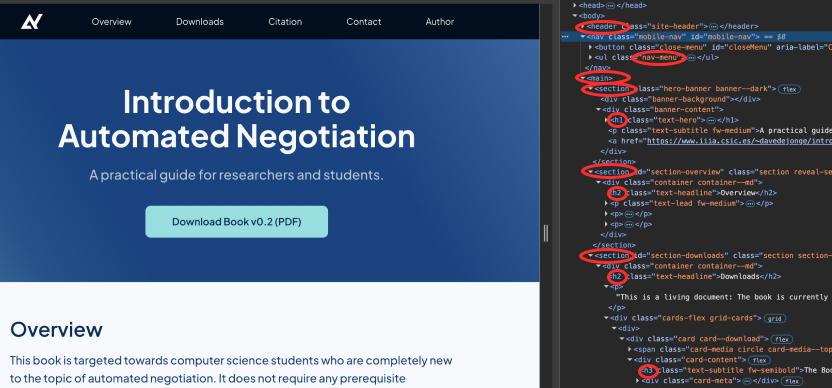
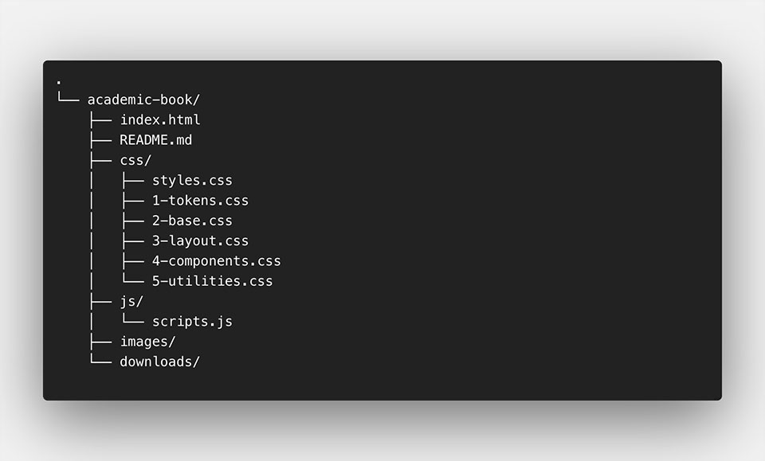

Design System for Academic Book
A clear and scalable website built to support complex academic content and future growth.

Short on time?
A quick snapshot of the project — read the one-minute summary or scroll for the full case study.
- Context: An academic book website designed to present complex research content and downloadable materials in a clear, structured way
- Challenge: Academic content was dense and text-heavy, making it hard to quickly scan, understand, and navigate at a glance
- Solution: I designed a lightweight design system and a responsive one-page layout focused on clarity, accessibility, and future scalability
- Outcome: A clear and professional website that makes complex academic content easier to understand and ready to scale over time
Background
Introduction to Automated Negotiation is an academic book about negotiation systems, agent-based models, and computational strategies.
The author needed a simple and modern website to present the book and its materials, with the possibility to grow in the future. Although the current version is a single-page site, it was planned as the starting point of a larger product.
Project overview
The project focused on creating a clear and usable experience for academic content. The goal was to make information easy to read, downloads easy to access, and the interface ready to scale.
A lightweight design system and a fully responsive layout support future chapters and interactive features.
My role
The project focused on clarity, usability, and scalability. I worked on organizing academic content, improving access to downloads, and ensuring the site is accessible and responsive. I also added subtle interactions that support usability without distracting from the academic content.
1. UX approach & Key insights
To understand the needs of both the author and the students, I conducted conversations and feedback sessions. I learned that users needed quick access to the latest book version, a clear version history, and an immediate way to copy the BibTeX citation. These insights guided the design decisions:
- A prominent “Download v0.2” button in the hero for instant access.
- Version history presented as a table on desktop and adaptive cards on mobile.
- A BibTeX section with copy-to-clipboard, ARIA labels, focus states, and live confirmation.
- Consistent vertical rhythm to keep the academic content readable and distraction-free.
- Since the site works as a one-page flow, navigation scrolls to each section.

Mapping user needs to design decisions across the one-page experience.
3. UI Design & Visual Language
The visual direction balances academic credibility with modern usability, ensuring the interface feels serious, readable, and approachable.
- Primary color: Deep blue, representing trust and research
- Secondary color: Turquoise for interactions
- Neutral scale: Clean reading and contrast
- Rounded corners: Soften the scientific tone
- Minimal shadows: Used only when needed
- Typography: Plus Jakarta Sans for a modern academic feel

Visual language applied across typography, color, and UI components.
4. Design System & Tokens
The interface is built on a lightweight but robust token system. All components—spacing, typography, colors, and interactions—are driven by this foundation.
This keeps the UI consistent, scalable, and easy to maintain.
A simplified Landing page structure overview showing how different sections, content types, and CTAs are combined across the landing pages.
4.1 Foundations (Base Tokens)
Foundations define the core rules of the interface. These base tokens control layout, typography, color, and visual rhythm across the entire system.
They control layout structure, visual rhythm, and readability across the entire system.
- Responsive type scale
- Line-height tokens for readability
- Spacing scale from UI elements to sections
- Radius and shadow tokens for hierarchy


Comparison between the original website's inconsistent typography (left) and the refined direction using DM Sans (right), showing improved hierarchy and readability.
Among these foundations, color plays a key role in both accessibility and interaction, so it is documented in more detail below.
Color Tokens (Raw Palette)
The color palette is defined as a set of raw tokens. These tokens represent pure values and do not describe usage or intent.
Colors are organized into structured scales to keep the interface consistent and accessible.
- Primary (blues 50 → 900): Used for structure, titles and body text
- Secondary (turquoise 50 → 800): Adds a more expressive, aqua-like accent. Used for interaction: hovers, active states, links.
- Neutrals (0 → 200): Used for backgrounds, section alternation, table headers, and cards.
This structure gives the UI a clean tone while supporting AAA contrast where needed.

4.2 Semantic Tokens
Semantic tokens map raw values to meaningful roles in the interface. Instead of using specific colors or sizes, components rely on tokens that describe intent.
This layer improves clarity, consistency, and flexibility across the system.
- Surface tokens for sections, cards, and highlighted areas
- Text tokens for primary, secondary, and muted content
- Border tokens for dividers and structured elements
- Interactive tokens for hover, focus, and active states
This abstraction makes the system easier to reuse and extend. (More details are available on GitHub.)
Semantic tokens connect raw values to real UI usage,ensuring consistent surfaces, text, and interaction states.
4.3 Components
UI components are built as reusable modules on top of the token system. Each component follows the same structure and interaction rules.
- Buttons share consistent hover, focus, and active states
- Cards follow a predictable internal layout and spacing
- Tables adapt to mobile layouts using token-based rules
- Navigation is fully keyboard-accessible and screen-reader friendly
This modular approach keeps the codebase clean, predictable, and easy to maintain.


Semantic tokens connect raw values to real UI usage, ensuring consistent surfaces, text, and interaction states.
5. Accessibility
I followed a set of practical guidelines to make sure everyone can use the website comfortably.
5.1 Colour Contrast
All colours follow WCAG AA contrast standards. Using tokens for text, surfaces, and interactive elements helps maintain consistent, accessible contrast across light and dark backgrounds.

5.2 Semantic HTML Structure
The page is built using meaningful HTML elements such as
<nav>,
<header>,
<section>,
<table>,
and
<footer>.
Clear headings and a consistent hierarchy make the content easier to understand for both users and assistive technologies.
5.3 Keyboard Navigation & Focus States
All interactive elements—buttons, links, the mobile menu, and the copy-to-clipboard action—are fully usable with a keyboard.
Visible focus states are defined using design tokens, so users always know where they are when navigating the page.
5.4 Screen Reader Labels & ARIA
Descriptive ARIA labels are used for key actions such as “Open menu”, “Close menu”, and “Copy BibTeX entry”.
On mobile, where the version table becomes cards, additional labels ensure that screen readers still communicate the same information clearly.
6. Responsive Web Layout
Although the site is primarily desktop-first, I designed a flexible responsive system. The hero adapts for better readability, cards rearrange into grids or single-column layouts, and the version table becomes stacked cards on smaller screens. Navigation turns into an accessible mobile menu, ensuring the page remains functional across devices whenever needed.
7. Interaction design
Small micro-interactions support usability without distracting from academic content. Buttons provide clear feedback, navigation feels responsive, and copy actions confirm success instantly.
8. CSS Architecture - Client-friendly & maintainable
I designed a CSS structure that is clean, scalable, and easy for the client to maintain. Instead of a single large file or an overly complex system, I created a lightweight, modular architecture with clear responsibilities for each file. This makes updates safer, supports long-term growth, and allows non-technical users to adjust simple styles without breaking the layout.

A simplified Landing page structure overview showing how different sections, content types, and CTAs are combined across the landing pages.
9. Outcome & Learnings
The result is a clean, accessible, and scalable website built with semantic HTML, custom CSS, and minimal JavaScript. A small design-token system for spacing, colour, and typography keeps the interface consistent and easy to maintain. Beyond being a single-page site, this project became a solid foundation for a growing academic resource.
This project reinforced three key ideas:
- Consistent mathematical systems improve visual harmony
- Designing for scale means thinking beyond immediate needs
- A good design system prevents future problems before they appear